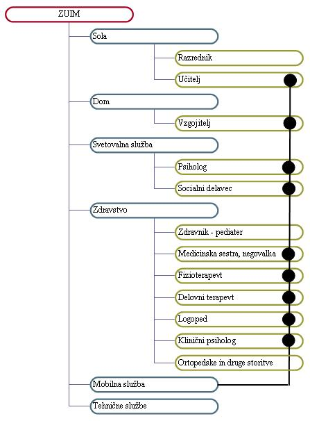
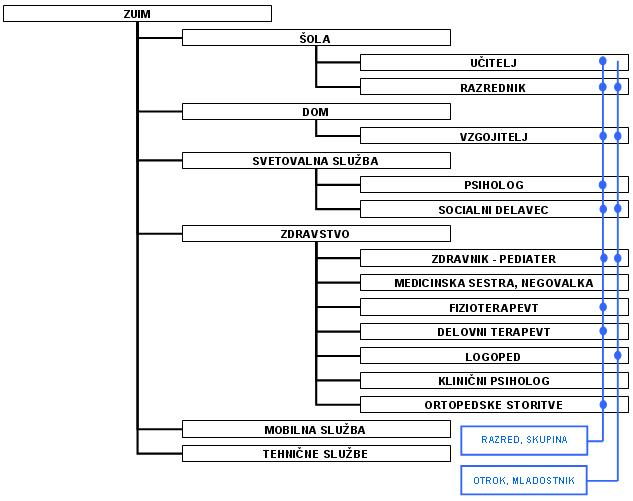

|
V mrežni organizacijski strukturi opravlja vsak posamezni delavec delo, za katero je usposobljen in izobražen. Vsako delovno mesto predstavlja torej kamenèek v mozaiku celovite storitve. Napori posameznih zaposlenih se ob premišljenem organiziranju dela med seboj lepo podprejo. Rezultat takega usklajenega sodelovanja so uèinki, ki so veèji od obièajnega seštevka naporov in prispevkov posameznih delavcev. Take presežne uèinke imenujemo nadseštevni uèinki. Nadseštevne uèinke imenujemo s tujo besedo tudi sinergijski ali sinergièni uèinki. Skupine predstavnikov posameznih organizacijskih enot CIRIUS Kamnik, ki sodelujejo med seboj pri obravnavi posameznih dijakov ali skupin oziroma razredov, se imenujejo operativni timi.  Slika 1: Skupina strokovnih delavcev, ki delujejo v okviru mobilne službe  Slika 2: Mreža skupin strokovnih delavcev, ki obravnavajo posamezne dijake ali skupine 1. Vprašanja za usmerjanje pozornosti in usvajanje novih besed: 1. Naštej strokovne delavce, ki sodelujejo v mobilni službi CIRIUS Kamnik na prvi sliki? 2. Naštej strokovne delavce, ki sodelujejo v obravnavi dijaka na drugi sliki? 3. Naštej strokovne delavce, ki sodelujejo v obravnavi razreda na drugi sliki? 4. Kako imenujemo skupine strokovnih delavcev v CIRIUS Kamnik, ki sodelujejo pri obravnavi posameznih, dijakov, skupin in razredov? 2. Zapiši od ene do pet kljuènih besed, ki povzemajo vsebino te uène enote. 3. Vprašanja za razmislek, ponavljanje in povezovanje z lastno izkušnjo: 1. Kako imenujemo s slovensko besedo uèinke usklajenega sodelovanja sodelavcev? 2. Kako imenujemo s tujo besedo uèinke usklajenega sodelovanja sodelavcev? 4. Domaèa naloga: V enem do petih stavkih zapiši, kaj ti je v tej uèni enoti najbolj ostalo v spominu. |